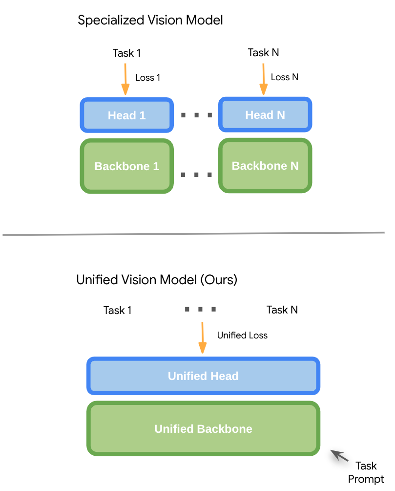
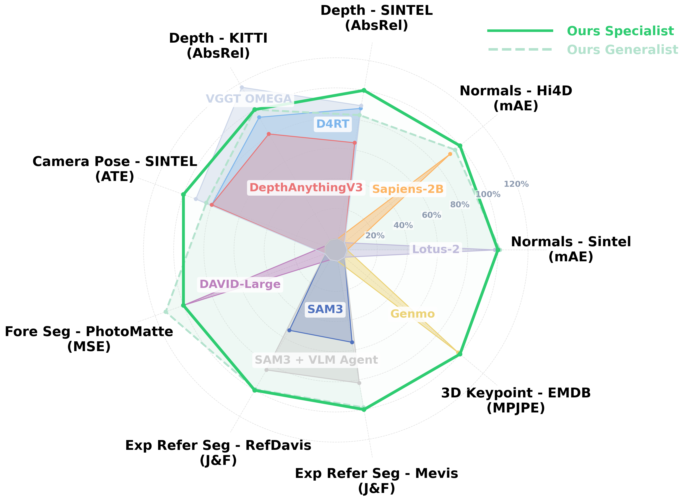
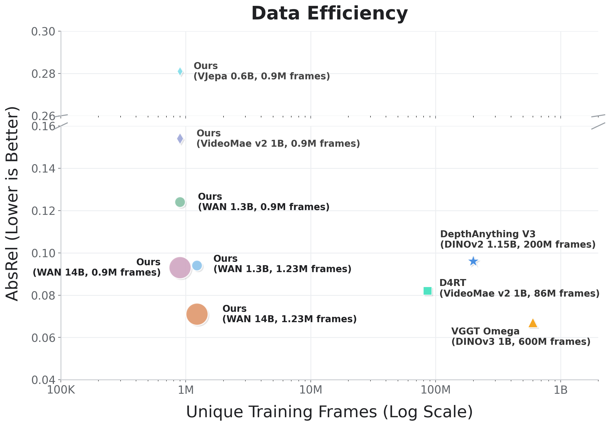

Pushing computer vision from the task-specific era toward general-purpose visual intelligence — just as NLP evolved from task-specific models into general-purpose language intelligence.
GenCeption repurposes a pre-trained video generative model into a single unified, general-purpose, feed-forward vision model that solves a wide range of vision tasks with SOTA performance — all steered by text instructions, with exceptional learning efficiency and intriguing emergent behaviors.
GenCeption leverages video generation models as representation pretraining, and conducts multi-task post-training in a unified architecture.
GenCeption handles both dense and sparse vision tasks, transforming the multi-step generative backbone into a single-step feed-forward model.
GenCeption is a SOTA unified model on various vision tasks, with exceptional learning efficiency and intriguing emerging behaviors.

Methodology. GenCeption leverages a video generative diffusion model as a pre-training base to capture rich spatio-temporal world priors and native vision-language alignment at scale. During multi-task post-training, the model is adapted to a feed-forward model fine-tuned on predominantly synthetic data to handle diverse perception tasks. GenCeption shows strong performance on multiple vision tasks with intriguing Emerging Behaviors, enabling seamless sim-to-real transfer and generalization to out-of-distribution object categories.
Paradigm Shift. This highlights a paradigm shift from specialized, task-specific computer vision models toward fully unified, generalist vision models — just as NLP evolved from task-specific models into general-purpose language intelligence.


SOTA performance: GenCeption is competitive with or outperforms state-of-the-art models dedicated to individual tasks (DepthAnything3, D4RT, VGGT-Ω, SAM3, Sapiens, DAVID, Genmo, Lotus-2). Our specialist denotes a model trained on each task individually, whereas the generalist represents a single model trained jointly across multiple tasks.
Data efficiency: under matched fine-tuning data, the video-generative backbone beats alternative pre-training paradigms (V-JEPA, VideoMAE V2), shows preliminary scaling properties, where it improves with larger models and more data, and reaches performance comparable to D4RT and VGGT-Ω with 7× to 500× less training data.
Architecture overview of GenCeption, a simple yet powerful architecture adapted from text-to-video diffusion models. Given an input video and a text prompt specifying the desired output, our unified model, trained majorly on synthetic data, is capable of performing a wide range of dense and sparse perception tasks, with a single forward-pass of the model. The dense vision tasks are unified in the RGB ambient space where supervision can be applied in latent space efficiently, and the sparse vision tasks are realized by adding learnable tokens as additional inputs to the diffusion transformer (DiT).
GenCeption is able to seamlessly switch between different vision tasks, just like how humans do in real life.
Given a natural-language expression, GenCeption accurately segments the referred object — reasoning about colors, spatial relationships and motion — and generalizes to unseen objects (e.g., a rocket) by leveraging knowledge from text-to-video pre-training.
As an example of pushing the boundaries of understanding the complex visual world, GenCeption predicts 4D human keypoints under challenging conditions (complex motion, occlusion, ego-centric, multi-view, etc.) — robust 4D human understanding that underpins real-world applications across robotics and AR/VR.
From a single video, GenCeption predicts per-pixel geometry and camera pose that lift the scene into a 4D point cloud — enabling free-viewpoint fly-throughs and language grounding of objects from a text instruction.
Although fine-tuned predominantly on synthetic human videos, GenCeption transfers seamlessly from simulation to real footage and to out-of-distribution categories — evidence of a universal "world model" inside generative video backbones.
@inproceedings{wang2026genception,
title = {Video Generation Models are General-Purpose Vision Learners},
author = {Wang, Letian and Zhang, Chuhan and Kabra, Rishabh and Uijlings, Jasper and
Waslander, Steven and Zisserman, Andrew and Carreira, Joao and He, Kaiming and
Andriluka, Misha and Bazavan, Eduard Gabriel and Zanfir, Andrei and Sminchisescu, Cristian},
booktitle = {European Conference on Computer Vision (ECCV)},
year = {2026}
}The following acknowledgements are not exhaustive. We are also grateful to many others whose support, feedback, and discussions contributed to this work but who are not individually acknowledged here.
We are deeply grateful to Jeremiah Harmsen, Joëlle Barral, Chris Dyer, Rahul Sukthankar, Junlin Zhang, Miki Rubinstein, Thabo Beeler, Di Qiu, Jesús Pérez, Alberto García García, Sergio Orts Escolano, Erroll Wood, Iker J. de los Mozos, and Emily Conn for their invaluable support throughout this project.
We also thank the following individuals (listed alphabetically by last name) for insightful research discussions, technical feedback, and valuable conversations on implementation details: Thiemo Alldieck, Yanrui Bin, Ang Cao, Minghao Chen, Carlton Chu, Dima Damen, Shlomi Fruchter, Valentin Gabeur, Robert Geirhos, Tengda Han, Zeren Jiang, Linyi Jin, Ruofan Liang, Ziwei Liao, Haotong Lin, Xingchao Liu, Yibo Liu, Shangbang Long, Viorica Patraucean, Cordelia Schmid, Hao Shao, Jianyuan Wang, Luyu Wang, Thaddäus Wiedemer, Ziyi Wu, Yuxi Xiao, Junyu Xie, Wei Yu, Shangzhan Zhang, and Shuhong Zheng.
Also see the authors' personal thoughts after the project.
Project page for “Video Generation Models are General-Purpose Vision Learners.”